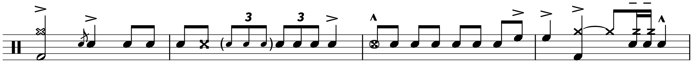

Transcription: “Wind Machine” — Louie Bellson with The Buddy Rich Big Band
Posted on December 6, 2020

At long last! It’s finally time to wrap up the Buddy Rich Memorial Concert posts. Louie Bellson takes us home with the tune “Wind Machine”, from the first half. I kind of went about these in a weird order — Steve Gadd and Gregg Bisonette were the first drummers I had worked on, so I ended up just alternating from the first and second halves. I guess it’s appropriate to call it a day with the oldest drummer who was there.
I had an interesting decision to make with Louie; the other tune he played was “Carnaby Street”. If you’re a big Buddy fan, you probably don’t recognize that chart. That would be because Buddy never played a number called “Carnaby Street” — Louie had the song written for him by a guy named Jack Hays (who I guess was less of a jazz composer and more of a bigwig arranger for film scores).
“Carnaby Street” is basically “Moby Dick”, where Louie plays with the band for a minute before starting an extended drum solo and eventually cueing the band back in to wrap the song up. Much like “Moby Dick”, his solo has a well defined structure (compare the memorial concert performance to another one from 1991).
I wanted to look at the solo, but I couldn’t decide which moments to focus on, and I wasn’t prepared to do all of it. It also felt weird to do a piece that Buddy never played… so “Wind Machine” it is.
I start the sheet music up right after the tenor solo (I must say that Steve Marcus really got a workout that night), and finish out the tune. You can tell Louie is an old school drummer; most of his playing is centered around the ride and snare, and he lays off the ghost notes, practically substituting them for buzz rolls. Nobody plays buzz rolls these days. In fact, classic books like Portraits in Rhythm aren’t very valuable to modern drum set players because of their outrageous emphasis on buzz rolls.
Other classic moves involves the oft-forgotten stick shot, and some bass drum feathering. There were certain passages where the kick is practically inaudible, so I did my best to figure it out. I never got a good look at the feet to make sure, so I had to go off of what made sense for a drummer like Louie to play.
The chart has several short drum solos throughout. Notice how these solos tend to start with half notes, giving the drum fills a little more space to breathe:
Louie whips out the double kick for some of his fills throughout the tune — the guy is usually credited with pioneering double bass drums in his teenage years during the late 1930’s. It’s quite fascinating to compare his double kick moves to the likes of Gregg and Dennis Chambers, as both had very hip licks. Louie definitely belongs in the first half, and the music here shows he had pretty good double bass facility.
The big finale is interesting. I have the original sheet music, and it calls for two bars of the band, then two bars of drum solo:
But in practice, I think the Buddy’s band just held the chord for however long, and then Buddy/Louie would cut the band off to ad-lib a solo. I did my best to get the timing down, and I think it’s pretty close. Louie uses some smoking singles and big double bass builds to bring it home.
Kind of a low key end to these posts, but I finally get to move on from this gig. I think I’ll take a break from transcribing for a few weeks to share my thoughts on what I learned from this project. Farewell for now.
Tags: 2020 • Transcription • Louie Bellson • The Buddy Rich Big Band • The 1989 Buddy Rich Memorial Concert